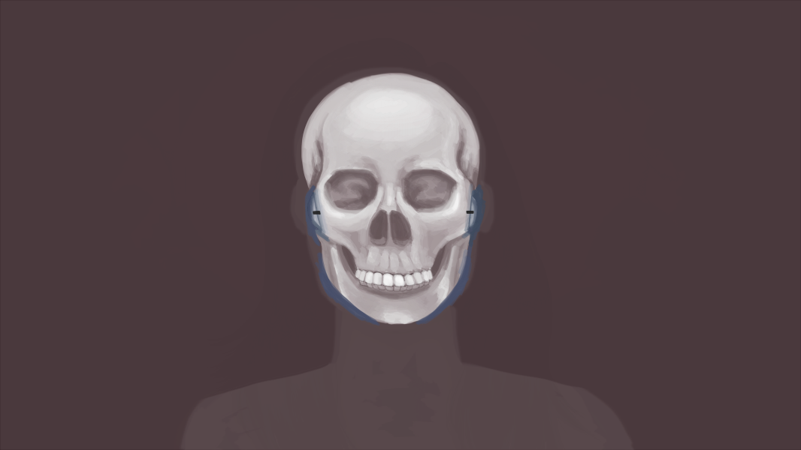
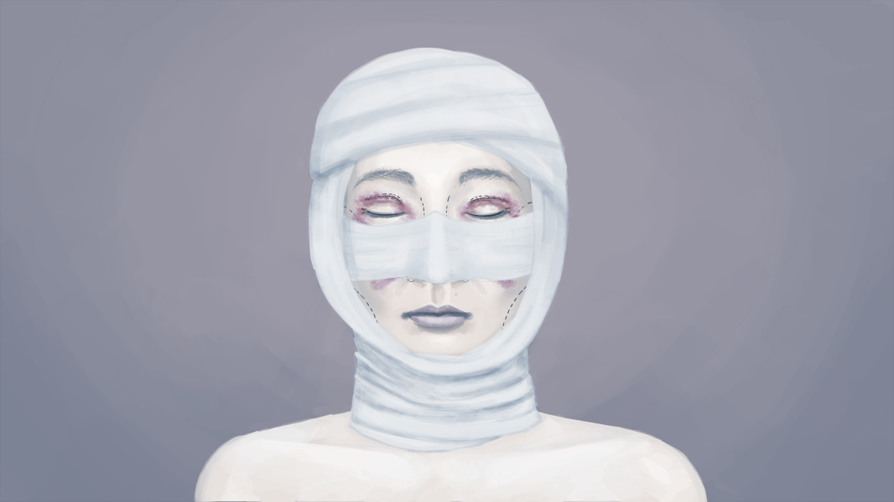
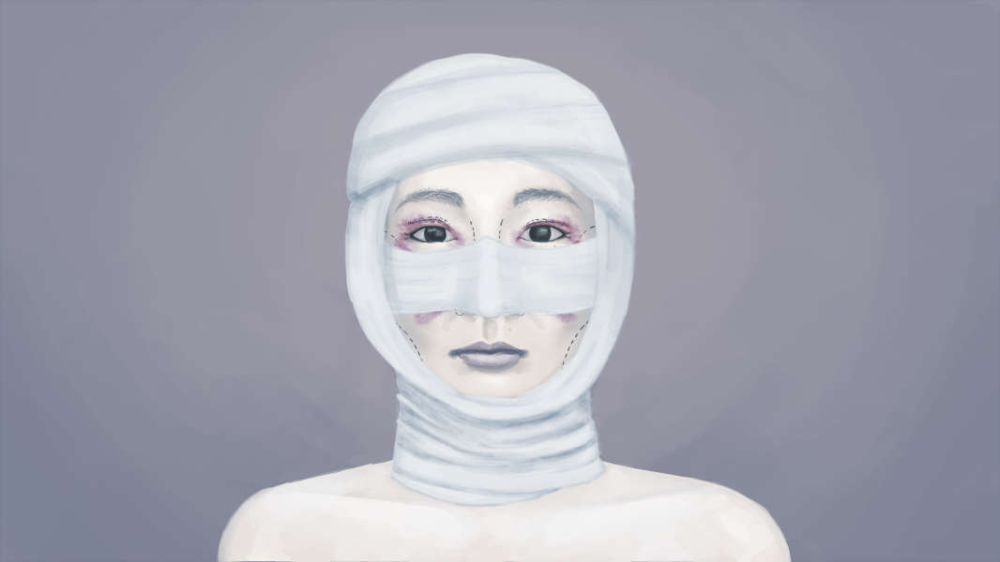

RESUMÉ

Education
University of PittsburghComputer Science and Mathematics
Studio Arts and Chemistry
GPA: 3.836

Languages
Java, C, CSS, HTML, MATLAB, LaTeX
Employment
Illustrator at The Pitt News
Extracurriculars
Business Manager of Math ClubLoL at Pitt
Computer Science Club
Personal Projects
Project Euler SolutionsError Analysis on Power Method
Personal Website
Zombie Population Modeling
PORTFOLIO
Miscellaneous Projects


Project: Plastic Surgery - "Make Me Pretty"




